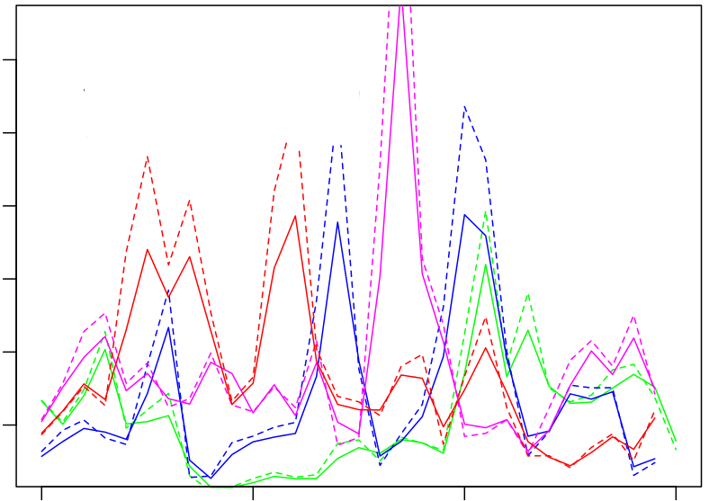

Decision Support Framework
Decision Support Framework

The MareFrame Decision Support Framework is a pragmatic planning process for moving towards an Ecosystem Approach to Fisheries Management. Click on the map of Europe to the left to see all case studies or explore the current case study below.

Case Study: South Western-Waters: Gulf of Cádiz
Objective: To improve the adaptive capacity of both management measures and fishing behaviour to the attributes of the anchovy fishery (Engraulis encrasicolus)
Management Problem:
The failure of the current management approach to handle short-lived pelagic species (boom and bust dynamics). Anchovy for the area is managed through a semi-fixed TAC based in past landings. Current TAC does not seem to be restrictive as landings have been well below TAC during 8/10 of years ; in 2/10 years landings have exceeded TAC.
The advice provided by ICES (2014) is a survey based assessment without catch advice. Total catch and discards of anchovy are unknown. The stock status in terms of both fishing pressure and stock size are unknown as well. As a result ICES concludes that “no reliable analytical assessment can be presented for this stock. This is because insufficient data are available. Fishing possibilities cannot be projected (ICES, 2014: 3).
Recruitment depends strongly on environmental factors. Therefore, the advice for management should integrate the environmental forcing (mainly fresh water discharge from Guadalquivir River, sea surface temperature, intense easterly wind) on the population dynamics and the socio-economic aspects directly impacted (i.e. income, employment and profitability) by the management strategy. The stakeholders requested to: “search for a tool to manage the fishery in a fashion that could help to smooth these strong fluctuations in favour of more stable incomes, including the swapping between anchovy and sardine the catches of the pelagic fleet”. The stated management priority is directly linked with the CFP objective about maintaining the anchovy stock in a sustainable level.
Management Setting:
The governance setting involves one single nation –Spain- within the European Union framework. Nevertheless, the following interactions should be considered due to their indirect effects in the fisheries: i)International quota swaps and transfers: sardine/ anchovy between Spain and Portugal; sardine/anchovy between Portugal and France.1; ii) Fisheries Partnership Agreement (FPA) with Morocco2: near 50% of the target fleet for the CS may alternate the fishing effort between the Gulf of Cádiz and Morocco; iii) Fisheries Bilateral Agreement between Spain and Portugal (2013-2015).
The fisheries is managed under the Common Fisheries Policy while environmental aspects are mainly managed under the Marine Strategy Framework Directive. The national and regional governments have competences in implementing fisheries and environmental management measures in the near shore area.
Main objectives and criteria:
A management proposal for the case study will be evaluated in relation to a set of objectives and criteria (see the list below). Some criteria are derived from the main policies that apply to the case study (CFP and MSFD) and others have been defined by stakeholders through the co-creation approach.
| Objectives for the management plan proposal | Candidate operational objectives and indicators |
|---|---|
| Optimize profitability and sustainability |
|
| Strategies to mitigate environmental fluctuations |
|
| Environmental sustainability indicator |
|
| Social sustainability indicator |
|
| Economic sustainability indicators |
|
| Objectives for the management plan derived from the MSFD and the CFP | |
| A3. To guarantee the conservation of species and marine habitats, particularly those considered declining |
|
|
|
| C1. To guarantee that activities and uses of the marine environment are compatible with the preservation of its biodiversity |
|
| C3. To promote a better knowledge of the marine ecosystems |
|
| CFP: Progressively restoring and maintaining populations of fish stocks above biomass levels capable of producing MSY (art. 2.2.) |
|
| Landing obligation |
|

Ecosystem model output

Análisis de escenarios de gestión
Management Scenarios:
4 Management alternatives were identified during the DSF Workshop in Seville 20.10.2015
The current path scenario is included to establish a baseline for comparing alternative management approaches (see below).
| Alternatives/ Measures |
A. Current Path | B. Adaptation | C. Guarantee | D. Adaptation & guarantee |
|---|---|---|---|---|
| Quota allocation (TAC) | Semi-fixed | Variable | Semi-fixed | Variable |
| Environmental factors | Excluded | Included | Excluded | Included |
| Forecast of available stock | Unavailable | Available | Available | Available |
| Insurance coverage | Unavailable | Unavailable | Available | Available |
- ^The Member States normally save a percentage of the allocated annual TAC for SWAPS with other Member States as well as to cover potential overquotas from the initial ones; e.g. in 2015 Portugal transferred 1.300 tonnes of anchovy to Spain, which allowed for the reopening of the Anchovy fisheries in the Gulf of Cádiz.
- ^The current FPA between the EU and Morocco entered into force on February 2007 for a period of four years. It has been tacitly renewed to February 2015. The current Protocol entered into force on July 2014.